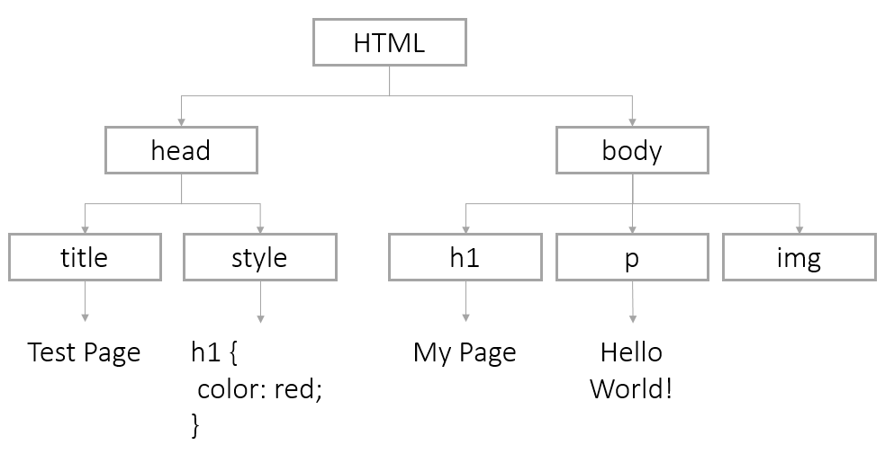

JavaScript
http://mbranko.github.io/webkurs
Ovo je deo web kursa
Literatura
- JavaScript Programmers Reference
- JavaScript: The Good Parts
- JavaScript Guide od Mozilla Developers Network.
- Code Academy sa interaktivnim JavaScript lekcijama.
Sadržaj
- JavaScript: obične stvari
- JavaScript: neobične stvari
- ...
Istorija
- 1995: Brendan Eich kreirao jezik Mocha za Netscape
- rename: Mocha -> LiveScript -> JavaScript
- "Java" u imenu iz marketinških razloga
- 1996: predat na standardizaciju u ECMA
- 1997: ECMA-262: ECMAScript
- 1998: ECMAScript 2
- 1999: ECMAScript 3
- 2000: JavaScript 2 / ECMAScript 4
- Microsoft ignorisao, imao svoje Jscript i vbscript jezike
- nije zaživeo
- 2005: Mozilla ulazi u Ecma
- Macromedia Flash: ActionScript 3
- Adobe preuzima Macromedia
- 2005: pojam AJAX
- nastanak jQuery, Prototype, Mootools, Dojo
- 2009: ECMAScript 5
- čak i Microsoft podržao
- 2015: ECMAScript 6
JavaScript nastao za 10 dana
Konfuzni zahtevi rezultovali biserima
- automatsko dodavanje tačka-zarez
- automatska konverzija tipova
- nema block scoping
- nema klase
- nema module
- neobično nasleđivanje
Neke osobine se kasnije pokazale kao dobre :)
JavaScript: obične stvari
script tag
Možemo mešati JavaScript i HTML. Tag script sadrži JavaScript u HTML dokumentu.
<script>
// ovde pišemo JavaScript kod
</script>
script tag
Kao i CSS, dugačak JavaScript kod možemo smestiti u poseban fajl.
<script src="path/to/file.js"></script>
Prvi primer
Snimiti ovaj HTML fajl pod imenom index.html i otvoriti u čitaču.
<!DOCTYPE html>
<html>
<head>
<title>Test stranica</title>
</head>
<body>
<p>Ovo je prvi JavaScript kod.</p>
<script>
alert('Hello World!');
console.log('Secret message');
</script>
</body>
</html>
Konzola u čitaču

Otvaranje konzole za Chrome:
- Windows/Linux: Ctrl + Shift + J
- Mac: Cmd + Option + J
Naredbe
JavaScript program se sastoji od naredbi
console.log('Hello World!');
console.log('I am glad to meet you');
console.log('I am fuzzy');
Komentari
Komentari u kodu se igonorišu prilikom izvršavanja.
/*
Višelinijski
komentar
*/
console.log('Hello World!'); // jednolinijski komentar
Ispisivanje poruka
Otvori prozor sa porukom.
alert('Hello World!');
Ispiši poruku na konzoli.
console.log('Hello World!');
Dodaj tekst u HTML stranicu.
document.write('Hello World!');
Nazad na prvi primer
- Otvori
index.html. - Dodaj komentar u kod.
- Isprobaj različite načine ispisivanja poruke.
- Kreiraj novi fajl nazvan
mycode.js. - Premesti JavaScript kod u novi fajl.
Promenljive
Promenljiva je ime memorijske lokacije koja sadrži neki podatak (vrednost).
Deklaracija promenljive
Deklaracija (kreiranje) promenljive: napiši var i ime promenljive.
var numberOfKittens;
Promenljiva se odmah može inicijalizovati - dodeliti joj se početna vrednost.
var numberOfKittens = 5;
Vrednosti promenljivih
- Kada se promenljiva kreira ona nema vrednost (ona je
undefined). - Promenljivoj se može dodeliti vrednost.
- Promenljive mogu sadržati podatke različitog tipa.
- Vrednost promenljive može se menjati tokom vremena.
Nazivi promenljivih
- Razlikuju se velika i mala slova (case-sensitive).
- Nova promenljiva bi trebala da ima jedinstveno ime.
- Imena moraju početi slovom,
$ili_. - Ne možemo koristiti rezervisane reči.
- Ime bi trebalo da nosi jasno značenje.
Korišćenje promenljivih
Nakon kreiranja, promenljivu koristimo u kodu navođenjem njenog imena.
var numberOfKittens = 5;
console.log(numberOfKittens);
Prvi primer
U fajlu mycode.js kreiraj promenljivu, dodeli joj vrednost i prikaži je.
Tipovi podataka
- string niz znakova
var userName = 'John Doe'; - number integer ili floating point
var myAge = 30; - boolean
trueilifalsevar catsAreBest = true; - undefined vrednost još nije definisana
var favoriteThings; - null eksplicitno prazna vrednost
var goodDieselCars = null;
Brojevi
Promenljive mogu sadržati brojeve - cele ili u pokretnom zarezu.
var numberOfKittens = 5;
var cutenessRating = 9.6;
JavaScript automatski konvertuje cele u decimalne
NaN = Not-A-Number
Aritmetički operatori
Osnovne matematičke operacije
var numberOfKittens = 5;
var numberOfPuppies = 4;
var numberOfAnimals = numberOfKittens + numberOfPuppies;
Aritmetički operatori
| Primer | Ime | Rezultat |
|---|---|---|
-a |
Negacija | Suprotan znak od a. |
a + b |
Sabiranje | Zbir a i b. |
a - b |
Oduzimanje | Razlika a i b. |
a * b |
Množenje | Proizvod a i b. |
a / b |
Deljenje | Količnik a i b. |
a % b |
Moduo | Ostatak pri deljenju a i b. |
Prvi primer
Kreiraj dve promenljive i isprobaj aritmetičke operacije. Prikaži rezultate.
Stringovi
Promenljive mogu sadržati stringove.
Stringovi su omeđeni jednostrukim ili dvostrukim navodnicima.
var kittensName = 'Fluffy';
Ako navodnik treba da bude deo stringa, navodimo ga uz obrnutu kosu crtu (backslash).
console.log('I\'d like to use an apostrophe');
String operatori
Možemo spojiti dva stringa pomoću +, operatora konkatenacije.
var kittensName = 'Fluffy ';
var fullName = kittensName + 'McDougle';
console.log(fullName); // Outputs 'Fluffy McDougle'
String operatori
Možemo koristiti i += za konkatenaciju i dodelu vrednosti.
var kittensName = 'Admiral ';
kittensName += 'Snuggles';
console.log(kittensName); // Outputs 'Admiral Snuggles'
Prvi primer
Kreiraj dve promenljive, ime i prezime, i spoj ih da čine puno ime. Prikaži rezultat!
Prvi primer
Kreiraj dve promenljive, ime i prezime, i spoj ih da čine puno ime. Prikaži rezultat!
Konkatenacija stringova i brojeva
Konkatenacija se može primeniti na string i broj. JavaScript će tretirati broj kao string.
var numberOfFruit = 6;
var typeOfFruit = 'bananas';
var allTheFruit = 'I have ' + numberOfFruit + ' ' + typeOfFruit + '!';
console.log(allTheFruit);
Drugi primer
Kreiraj program koji će izračunati napojnicu u restoranu. Zahtevi:
- Napravi promenljive osnovna cena i procenat napojnice.
- Izračunaj ukupnu sumu.
- Ispiši rečenicu kao "Vaš ukupan račun, sa napojnicom, je €14.75".
- Možeš da koristiš
toFixed()za zaokruživanje na dve decimale.
Analiza koda
U ovom kodu uoči komentare, promenljive i operatore.
var billPreTip = 10;
var tipPercent = 0.15; // Can be changed
var billTip = billPreTip * tipPercent;
var receipt = 'Meal: ' + billPreTip + ' Tip: ' + billTip + ' Total: ' + (billPreTip + billTip);
console.log(receipt);
Funkcije
Funkcije su blokovi koda koji se mogu pozvati - koristiti više puta.

Deklaracija funkcije
Prilikom kreiranja funkcije možemo joj dati ime i navesti njen kod unutar vitičastih zagrada.
function parrotFacts() {
console.log('Some parrot species can live for over 80 years');
console.log('Kakapos are a critically endangered flightless parrot');
}
Funkcije mogu imati više redova i više naredbi.
Korišćenje funkcija
Prilikom pozivanja funkcije navodimo njeno ime praćeno zagradama ()
parrotFacts();
Za sada su nam zagrade prazne.
Šta se dešava ovde?
Funkciju možemo pozvati više puta.
Kada pozovemo funkciju po njenom imenu, čitač će izvršavati kod u njenom telu (definiciji).
Funkcija se mora deklarisati pre korišćenja.
Zadatak
Napiši funkciju koja ispisuje jednu rečenicu. Zatim pozovi tu funkciju u okviru svog koda.
Argumenti / parametri
Funkcije mogu primati vrednosti kao parametre.
function callKitten(kittenName){
console.log('Come here, ' + kittenName + '!');
}
callKitten('Fluffy'); // outputs 'Come here, Fluffy!'
function addNumbers(a, b){
console.log(a + b);
}
addNumbers(5, 7); // outputs 12
addNumbers(9, 12); // outputs 21
Argumenti / parametri
Možemo proslediti promenljive prilikom poziva funkcije. Promenljiva ne mora imati isto ime kao parametar funkcije.
function addOne(num){
var newNumber = num + 1;
console.log('You now have ' + newNumber);
}
// Declare variables
var numberOfKittens = 5;
var numberOfPuppies = 4;
// Use them in functions
addOne(numberOfKittens);
addOne(numberOfPuppies);
Zadatak
Napiši program koji će konkatenirati ime i prezime unutar funkcije i pozvati je. Onda izmeni funkciju tako da primi ime i prezime kao parametre.
Rezultat funkcije
Funkcija može da vrati rezultat.
function square(num) {
return num * num;
}
console.log(square(4)); // outputs '16'
var squareOfFive = square(5); // squareOfFive equals '25'
return će prekinuti dalje izvršavanje funkcije, izazvati povratak na mesto poziva i vratiti datu vrednost (ako je ima).
Zadatak
Dodaj return naredbu funkciji. Upotrebi tu funkciju da dodeliš vrednost promenljivoj.
Opseg vidljivosti promenljivih
Opseg vidljivosti određuje gde je promenljiva dostupna u programu.
Globalni opseg
Promenljiva deklarisana izvan funkcije ima globalni opseg i može joj se pristupiti sa bilo kog mesta, čak i unutar funkcija.
var awesomeGroup = 'webstudents'; // global scope
function whatIsAwesome() {
console.log(awesomeGroup + ' is pretty awesome.'); // will work
}
whatIsAwesome();
Lokalni opseg
Promenljiva deklarisana unutar funkcije ima lokalni opseg i može joj se pristupiti samo unutar te funkcije.
function whatIsAwesome() {
var awesomeGroup = 'webstudents'; // Local scope
console.log(awesomeGroup + ' is pretty awesome.'); // Will work
}
whatIsAwesome();
console.log(awesomeGroup + ' is pretty awesome.'); // Won't work
Logičke promenljive
Logičke promenljive sadrže vrednosti true ili false.
var catsAreBest = true;
var dogsRule = false;
Logičke promenljive
Neke vrednosti drugih tipova se smatraju za falsy i tretiraće se kao false u logičkom kontekstu.
// the following variables will evaluate as false
var myName = '';
var numOfKids = 0;
var isMarried; // remember a variable with no value is undefined
null i NaN će se takođe tretirati kao false.
Sve ostalo se tretira kao true.
Kontrola toka programa

if naredba
Pomoću if naredbe odlučujemo koje linije koda će se izvršiti na osnovu nekog uslova.
if (condition) {
// statements to execute
}
var age = 30;
if (age > 18) {
console.log('You are an adult');
}
Operatori poređenja
| Primer | Ime | Rezultat |
|---|---|---|
a == b |
jednako | true ako je a jednako b (mogu biti različitog tipa). |
a === b |
identično | true ako je a jednako b, i istog su tipa. |
a != b |
nije jednako | true ako je a različito od b (mogu biti različitog tipa). |
a !== b |
nije identično | true ako je a različito od b, ili nisu istog tipa. |
a < b |
manje | true ako je a manje od b. |
a > b |
veće | true ako je a veće od b. |
a <= b |
manje ili jednako | true ako je a manje ili jednako b. |
a >= b |
veće ili jednako | true ako je a veće ili jednako b. |
Pažnja!
Ne treba mešati = i == i ===!
Zadatak
Deklariši promenljivu temperature. Napiši kod koji će ti reći da li da obučeš jaknu (ako je manje od 15 stepeni).
Dvostruko i višestruko grananje

if/else naredba
Koristi else za alternativni blok naredbi - kada uslov nije ispunjen.
var age = 30;
if (age >= 16) {
console.log('Yay, you can drive!');
} else {
console.log('Sorry, you have ' + (16 - age) +
' years until you can drive.');
}
if/else naredba
Ako imamo više uslova možemo koristiti else if.
var age = 30;
if (age >= 35) {
console.log('You can vote AND run for President!');
} else if (age >= 30) {
console.log('You can vote AND run for the Senate!');
} else if (age >= 18) {
console.log('You can vote!');
} else {
console.log('You can\'t vote, but you can write your representatives.');
}
Zadatak
Izmeni prethodni "obuci jaknu" zadatak na sledeći način:
- Ako je manje od 15 stepeni, obuci jaknu.
- Ako je manje od 0 stepeni, obuci jaknu i stavi kapu.
- Ako je manje od -25 stepeni, ne izlazi napolje.
- Inače obuci šta hoćeš.
Logički operatori
| Primer | Ime | Rezultat |
|---|---|---|
a && b |
konkunkcija | true ako su a i b jednaki true. |
a || b |
disjunkcija | true ako ni a niti b nisu jednaki true. |
!a |
negacija | true ako a nije jednako true. |
Korišćenje logičkih operatora
Možemo koristiti logičke operatore za kombinovanje uslova.
var age = 30;
var yearsAsCitizen = 30;
if (age >=30 && yearsAsCitizen > 9) {
console.log('You can run for the Senate!');
} else {
console.log('You are not eligible to run for the Senate');
}
Zadatak
Dodaj logičke operatore u svoj "obuci jaknu" program.
Petlje
while petlja
while će ponavljati blok naredbi sve dok je uslov ispunjen.
var bottlesOfBeer = 99;
while (bottlesOfBeer > 0) {
console.log(bottlesOfBeer + ' bottles of beer on the wall');
bottlesOfBeer = bottlesOfBeer - 1;
}
Beskonačna petlja
Ako se vrednost logičkog izraza koji je uslov petlje ne menja, to je beskonačna petlja...

for petlja
for petlje su slične, ali se brojač deklariše unutar for naredbe.
// will count 1 to 10
for (var i = 1; i <= 10; i++) {
console.log(i);
}
Petlje i logički izrazi
U telu petlje se mogu naći grananja ili drugi logički izrazi.
// Count from 1 to 100
for (var i = 1; i <= 100; i++) {
if (i % 3 === 0) {
// Says 'Fizz' after multiples of three
console.log(' Fizz');
} else if (i % 5 === 0) {
// Says 'Buzz' after multiples of five
console.log(' Buzz');
} else {
console.log(i);
}
}
break
Za iskakanje iz petlje koristi se break naredba.
// Count from 100 to 200
for (var i = 100; i <= 200; i++) {
console.log('Testing ' + i);
//Stop at the first multiple of 7
if (i % 7 == 0) {
console.log('Found it! ' + i);
break;
}
}
Zadatak
Napiši petlju koja će ispisati umnoške broja 9,
od 9 x 1 = 9 do 9 x 12 = 108.
Dosadno ti je? Napiši petlju unutar petlje za sve umnoške svih brojeva od 1 do 12.
Nizovi
Nizovi su skupovi elemenata sa poretkom (redosledom).
var arrayName = [value0, value1];Niz može sadržati vrednosti različitog tipa.
var rainbowColors = ['Red', 'Orange', 'Yellow', 'Green',
'Blue', 'Indigo', 'Violet'];
var lotteryNumbers = [33, 72, 64, 18, 17, 85];
var myFavoriteThings = ['Broccoli', 1024, 'Sherlock'];
Dužina niza
Osobina (property) length predstavlja broj elemenata (dužinu) niza.
var rainbowColors = ['Red', 'Orange', 'Yellow', 'Green',
'Blue', 'Indigo', 'Violet'];
console.log(rainbowColors.length);
Korišćenje nizova
Elementima niza pristupamo po indeksu (poziciji) pomoću uglastih zagrada.
var rainbowColors = ['Red', 'Orange', 'Yellow', 'Green',
'Blue', 'Indigo', 'Violet'];
var firstColor = rainbowColors[0];
var lastColor = rainbowColors[6];
JavaScript nizovi su zero-indexed, brojanje počinje od 0.
Izmene u nizovima
Možemo promeniti vrednost elementa niza pomoću uglastih zagrada.
var myFavoriteThings = ['Broccoli', 1024, 'Sherlock'];
myFavoriteThings[0] = 'Asparagus';
Proširivanje nizova
Nizovi nemaju fiksnu dužinu. Možemo koristiti push da dodamo element na kraj niza.
var myFavoriteThings = ['Broccoli', 1024, 'Sherlock'];
myFavoriteThings.push('Dancing');
Zadatak
Kreiraj niz sa svojim omiljenim jelima.
Ispiši nekoliko pojedinačnih elemenata niza.
Nizovi + petlje

Iteracija kroz niz
Pomoću for petlje lako se pristupa svim elementima niza.
var rainbowColors = ['Red', 'Orange', 'Yellow', 'Green',
'Blue', 'Indigo', 'Violet'];
for (var i = 0; i < rainbowColors.length; i++) {
console.log(rainbowColors[i]);
}
Zadatak
Pomoću for petlje ispiši sva svoja omiljena jela.
Objekti

Objekti
Objekti imaju skup osobina (property).
var objectName = {
propertyName: propertyValue,
propertyName: propertyValue
};
var user = {
hometown: 'Atlanta, GA',
hair: 'Auburn',
likes: ['knitting', 'code'],
birthday: {month: 10, day: 17}
};
Pristup objektima
Osobinama pristupamo pomoću tačka-notacije.
var user = {
hometown: 'Atlanta, GA',
hair: 'Auburn'
};
var usersHometown = user.hometown;
Ili pomoću uglastih zagrada (kao nizovima).
var usersHair = user['hair'];
Promena osobina objekta
Tačka ili uglaste zagrade se mogu koristiti za izmenu vrednosti osobine.
var user = {
hometown: 'Atlanta, GA',
hair: 'Auburn'
};
user.hair = 'blue';
Dodavanje nove osobine
user.married = true;Brisanje osobine
delete user.married;Nizovi objekata
Nizovi mogu čuvati elemente bilo kog tipa, pa tako i objekte.
var users = [
{name: 'Jolene', age: 21},
{name: 'Alexa', age: 18}
];
for (var i = 0; i < users.length; i++) {
var user = users[i];
console.log(user.name + ' is ' + user.age + ' years old.');
}
Objekti
Kao i drugi tipovi, objekte možemo proslediti funkciji prilikom poziva:
var jolene = {
age: 21,
hairColor: 'Auburn',
likes: ['pizza', 'tacos'],
birthday: {month: 3, day: 14, year: 1995}
}
function describeUser(user) {
console.log('You are ' + user.age + ' years old with '
+ user.hairColor + ' hair.');
}
describeUser(jolene);
Zadatak
Kreiraj objekat koji čuva podatke o tvom omiljenom receptu. Trebalo bi da ima sledeće osobine:
recipeTitle(string)servings(broj)ingredients(niz stringova)directions(string)
Prikaži neke podatke o svom receptu.
Bonus: Napravi petlju za ispis svih sastojaka.
Metode objekta
Objekti mogu čuvati i funkcije (metode).
var jolene = {
age: 21,
hairColor: 'Auburn',
talk: function() {
console.log('Hello!');
},
eat: function(food) {
console.log('Yum, I love ' + food);
}
};
Poziv metode pomoću tačka-notacije:
jolene.talk();
jolene.eat('pizza');
Zadatak
Vrati se na svoj omiljeni recept.
Dodaj funkciju letsCook koja ispisuje "Gladan sam! Hajde da napravimo... " sa imenom tvog recepta.
Pozovi novu metodu.
Podsećanje: anatomija web stranice
Tvoj sadržaj
+ HTML: struktura
+ CSS: prezentacija
= tvoj web sajt
Web sajt je način za predstavljanje sadržaja korišćenjem HTML i CSS za vizuelni prikaz.
HTML je struktura

CSS je stil

CSS: ID ili klasa
- ID - odnosi se na tačno jedan element na stranici
Pomoću#određujemo ID u CSS-u. - klasa - Više elemenata može imati istu klasu,
npr. više elemenata sa klasomwarningna stranici.
Pomoću tačke.određujemo klasu u CSS-u.
Ugnježdavanje
HTML elementi se ugnježdavaju jedni unutar drugih.
DOM stablo: primer
Često ljudi doživljavaju HTML kao "ravnu" strukturu -- gomila teksta pomešanog sa tagovima.
<!DOCTYPE html>
<html>
<head>
<title>Test Page</title>
<style>
h1 {
color: red;
}
</style>
</head>
<body>
<h1>My Page</h1>
<p>Hello World!</p>
<img src="http://placekitten.com/g/200/300" alt="cat"/>
</body>
</html>
DOM stablo: primer
Međutim, svaki HTML dokument je DOM (Document Object Model) stablo.
Pristup DOM stablu
Web čitač predstaviti stranicu kao Document objekat koji predstavlja koren stabla dokumenta.
Preko document korena možemo:
- promeniti stablo dokumenta,
- napraviti novi HTML dokument iz početka ili
- pristupiti i zameniti čvorove stabla (HTML elemente u DOM stablu).
Pronalaženje DOM čvorova po ID-u
Možemo dobiti element stabla po njegovom ID-u pomoću:
document.getElementById(id);Na primer da bismo pronašli:
<img id="kittenPic" src="http://placekitten.com/g/200/300" alt="cat"/>
koristili bismo:
var imgKitten = document.getElementById('kittenPic');
Pronalaženje DOM čvorova po imenu
Možemo pristupiti elementima stabla po imenu pomoću:
document.getElementsByTagName(tagName);Na primer, za pronalaženje:
<ul>
<li>Daisy</li>
<li>Tulip</li>
</ul>koristili bismo:
var listItems = document.getElementsByTagName('li');
for (var i = 0; i < listItems.length; i++) {
var listItem = listItems[i];
}
DOM Access: HTML 5
In newer browsers, you can use methods getElementsByClassName, querySelector, and querySelectorAll.
Available in IE9+, FF3.6+, Chrome 17+, Safari 5+:
document.getElementsByClassName(className);
Available in IE8+, FF3.6+, Chrome 17+, Safari 5+:
document.querySelector(cssQuery);
document.querySelectorAll(cssQuery);
getElement vs. getElements
Any method that starts with getElement will return a single node.
document.getElementById('uniqueID'); // returns a single node
Any method that starts with getElements will return an array of nodes. To modify a single node, you will need to use bracket notation to get the correct one.
document.getElementsByTagName('p'); // returns multiple nodes
var specificParagraph = document.getElementsByTagName('p')[2];
Changing Nodes

Photo credit: Darryl Kenyon cc
DOM Nodes: Attributes
You can access and change attributes of DOM nodes using dot notation.
To change this element:
<img id="kittenPic" src="http://placekitten.com/g/200/300" alt="cat"/>
We could change the src attribute this way:
var imgKitten = document.getElementById('kittenPic');
// will return src attribute on image
imgKitten.src
// will set our src to a new src
imgKitten.src = 'http://placekitten.com/g/600/500';DOM Nodes: Getting and Setting Attributes
You can also use getAttribute or setAttribute
<img id="kittenPic" src="http://placekitten.com/g/200/300" alt="cat"/>
We could change the src attribute this way:
var imgKitten = document.getElementById('kittenPic');
// will return src attribute on image
imgKitten.getAttribute('src');
// will set our src to a new src
imgKitten.setAttribute('src', 'http://placekitten.com/g/600/500');DOM Nodes: Styles
You can change page css using style
To make this CSS:
body {
color: red;
}
Use this JavaScript:
var pageBody = document.getElementsByTagName('body')[0];
pageBody.style.color = 'red';DOM Nodes: More Styles
The rule of thumb in JavaScript is to change CSS styles with a "-" to camelCase.
To make this CSS:
body {
background-color: pink;
padding-top: 10px;
}
Use this JavaScript:
var pageBody = document.getElementsByTagName('body')[0]
pageBody.style.backgroundColor = 'pink';
pageBody.style.paddingTop = '10px';
Let's Develop It
Create a simple HTML page or use this sample code.
Isolate a node (an element on the page) and change an attribute or add a new style.
DOM innerHTML
Each DOM node has an innerHTML property with the HTML and content of its children. You can use the property to view or change the HTML of a node.
For example, you can overwrite the entire body:
var pageBody = document.getElementsByTagName('body')[0];
pageBody.innerHTML = '<h1>Oh Noes!</h1><p>I changed the whole page!</p>'Or just add some new content to the end
pageBody.innerHTML += '...just adding this at the end of the page.';DOM innerHTML continued
You can also target one specific element's content
To put content in this paragraph element:
<p id="warning"></p>We can select the node and modify it
var warningParagraph = document.getElementById('warning');
warningParagraph.innerHTML = 'Danger Will Robinson!';Creating New Nodes
The document object also has methods to create nodes from scratch:
document.createElement(tagName);
document.createTextNode(text);
element.appendChild(element);Creating New Nodes: Sample Code
var pageBody = document.getElementsByTagName('body')[0];
// create our image tag with attributes
var newImg = document.createElement('img');
newImg.src = 'http://placekitten.com/g/500/200';
newImg.style.border = '1px solid black';
// add our image to the body
pageBody.appendChild(newImg);
// create a paragraph tag with content
var newParagraph = document.createElement('p');
var paragraphText = document.createTextNode('Squee!');
newParagraph.appendChild(paragraphText);
// add our new paragraph to the body
pageBody.appendChild(newParagraph);Let's Develop It
Create a new paragraph element and add it to a div on your page.
Events

Events
An event is an object that is sent when actions take place on your webpage, most often when a user interacts with your webpage.
For example, JavaScript creates an event when a user clicks an element.
element.addEventListener('click', function(event) {
// code to be executed when user clicks
});
Types of Events
There are a variety of events. Some of the more common events are:
- click: Occurs when the user clicks on an element
- mouseover: Occurs when the pointer is moved onto an element
- mouseout: Occurs when the pointer is moved off an element
- keyup: Occurs when the user releases a key
- load: Occurs when a document has been loaded
- focus: Occurs when an element gets focus
- blur: Occurs when an element loses focus
Calling Functions from HTML
You can call a function directly from your HTML code:
<button id="myBtn" onclick="sayHi()">Click Me!</button>
function sayHi (event) {
alert('Hi!');
};Calling Functions from JavaScript
You can call a function from the addEventListener:
<button id="myBtn">Click Me!</button>
var button = document.getElementById("myBtn");
button.addEventListener("click", function (event) {
alert("Hi!");
});or
var button = document.getElementById("myBtn");
var sayHi = function (event) {
alert("Hi!");
};
button.addEventListener("click", sayHi);Let's Develop It
Go back to the sample files you downloaded earlier.
Make some JavaScript code fire after a mouseover event.
Preventing Defaults

Preventing Defaults
Elements like links and checkboxes have default behaviors determined by the browser. However, the event object has a built-in method to prevent the default behavior
Our anchor link in HTML
<a id="myLink" href="https://www.girldevelopit.com">GDI</a>
Code to prevent going to link's href on click
var link = document.getElementById("myLink");
link.addEventListener("click", function(event) {
event.preventDefault();
});
currentTarget
Photo credit: Alan Berning cc
currentTarget
The event's currentTarget references the element the event listener was attached to.
Our button in HTML:
<button id="myBtn">Click Me!</a>This code adds styles and text to our clicked button
myButton = document.getElementById("myBtn");
myButton.addEventListener("click", function(event) {
btn = event.currentTarget;
btn.style.backgroundColor = 'red';
btn.innerHTML = 'Clicked!';
};You may also see code that references the keyword this as the "target".
Let's Develop It
Write code that targets this link:
<a href="http://girldevelopit.com/" id="gdiLink">Girl Develop It</a>
When a user clicks the link, the page should display an error message instead of going to the Girl Develop It homepage.
User Input

Photo credit: Rym DeCoster cc
Forms
You can collect information from users to use in your code. The most common method is an HTML form
<form id="userForm">
<label for="name">First Name:</label>
<input type="text" id="firstName"/>
<input type="radio" name="married" value="Yes" checked /> Yes
<input type="radio" name="married" value="No" /> No
<input type="submit" id="submitBtn" value="Submit" />
</form>
Retrieving Form Data
You retrieve the values of form elements using the value method.
var name = document.getElementById('firstName').value;
console.log(name);
You can retrieve the value of a form at any time. Even when an event like blur is triggered (when a form element loses focus).
Radio Buttons
Radio buttons usually do not have IDs, so you will need to use a for loop to get the value on each radio:
var radios = document.getElementsByName('married');
var length = radios.length;
for (var i = 0; i < length; i++) {
if (radios[i].checked) {
var radioButtonValue = radios[i].value;
// only one radio can be checked, so stop now
break;
}
}
Submit buttons
If you are going to retrieve form values with the submit button, be sure to prevent the default action!
var submitButton = document.getElementById('submitBtn');
submitButton.addEventListener("click", function(event) {
event.preventDefault();
var name = document.getElementById('firstName').value;
console.log(name);
})
Let's Develop It
Collect a value from the input box on the page. Use it inside a function of some kind. For example, collect a number and multiply it by five or collect a name and display a greeting.
You did it!

Resources
- JavaScript Guide, from the Mozilla Developers Network.
- Code Academy, with interactive JavaScript lessons to help you review.
- Khan Academy has a lot more information abut drawing and animations.
JavaScript: neobične stvari
Podsećanje: promenljive
Promenljiva je imenovani kontejner za vrednost.
Ime se zove i identifikator.
Podsećanje: promenljive
var x;
var y = "Hello JS!";
var z;
Crvene kutije su promenljive i svaka od njih ima vrednost.
U njima se može nalaziti bilo koja JavaScript vrednost.